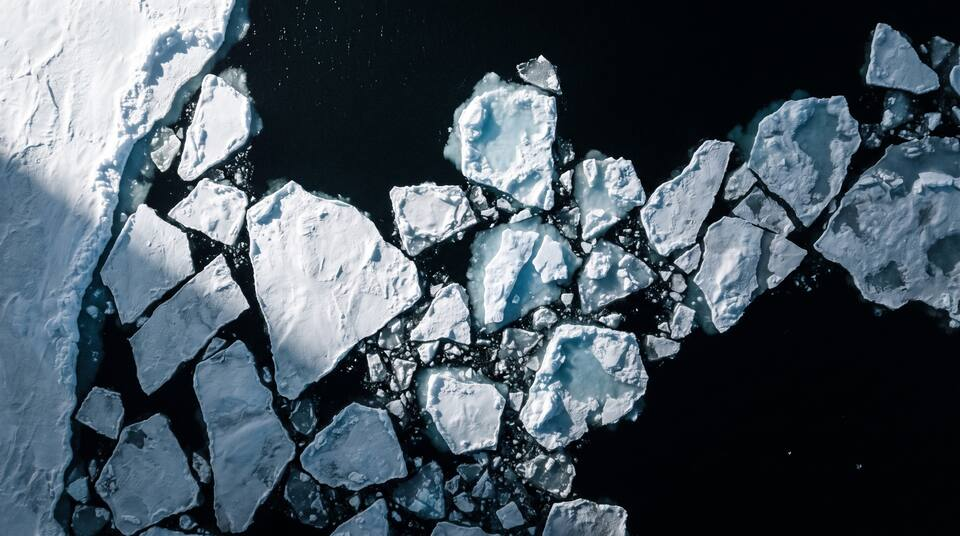
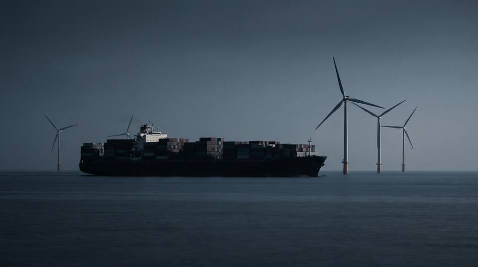

Run notes
Changes & Coverage
What changed since the prior run (), what was corrected, and what this run could and could not cover.

Changes since the prior run
Cross-cutting findings
Resolved or stabilized milestones
Corrections

Coverage limitations
Date range searched
Regional seas researched in depth
Scope limits
Seas are researched one at a time; the daily run re-verifies two seas in rotation. A sea not yet researched in depth shows only findings from global sweeps.
Findings by category
Every record in the feed, including resolved ones, split by severity level.
New findings per month
Records by the month the tracker first saw them, over the last 24 months.
Categories researched
| # | Category | Researched | Findings in feed | Note |
|---|